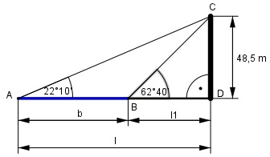

Aufgabe 96 Von einem 48,5 m hohen Turm aus erscheinen die beiden Ufer eines Flusses unter den Senkungs- winkeln α = 62°40' und β = 22°10'. Wie groß ist die Flussbreite b?

10 10’ = ----° = 0,1667° 60 40 40’ = ----° = 0,6667° 60 Im Dreieck ADC: 48,5 m tan 22,1667° = --------- |*l m l l * tan 22,1667° = 48,5 m |:tan 22,1667° 48,5 m 48,5 m l = --------------- = ----------- = 119 m tan 22,1667° 0,4074 48,5 m tan 62,6667° = ----------- |*l1 m l1 l1 * tan 42,6667° = 48,5 m |:tan 62,6667° 48,5 m 48,5 m l1 = --------------- = ---------- = 25,1 m tan 62,6667° 1,9347 b = l – l1 = 119 m – 25,1 m = 93,9 m